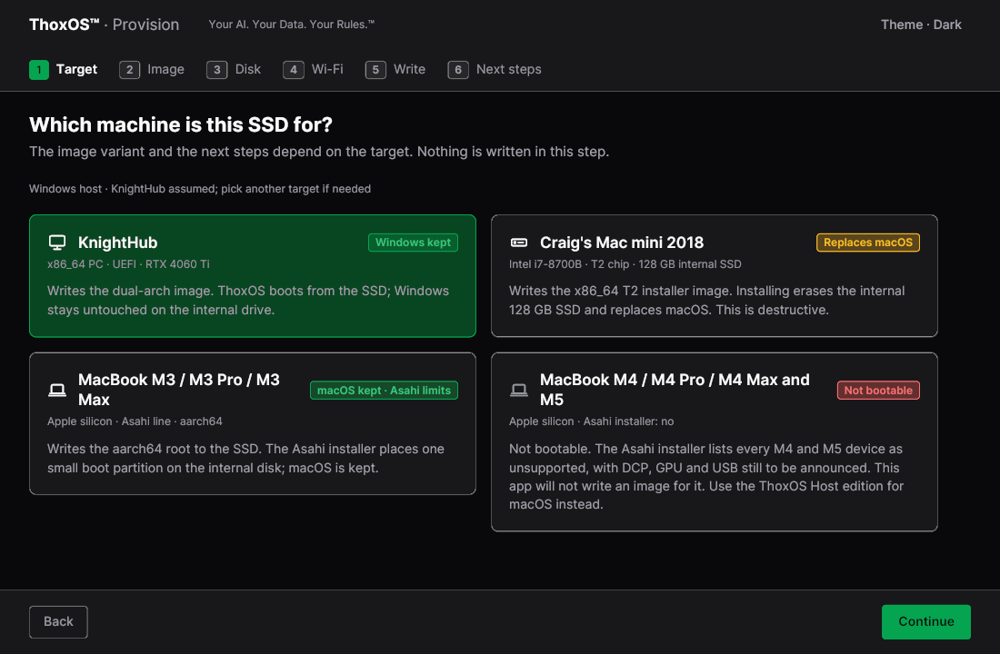
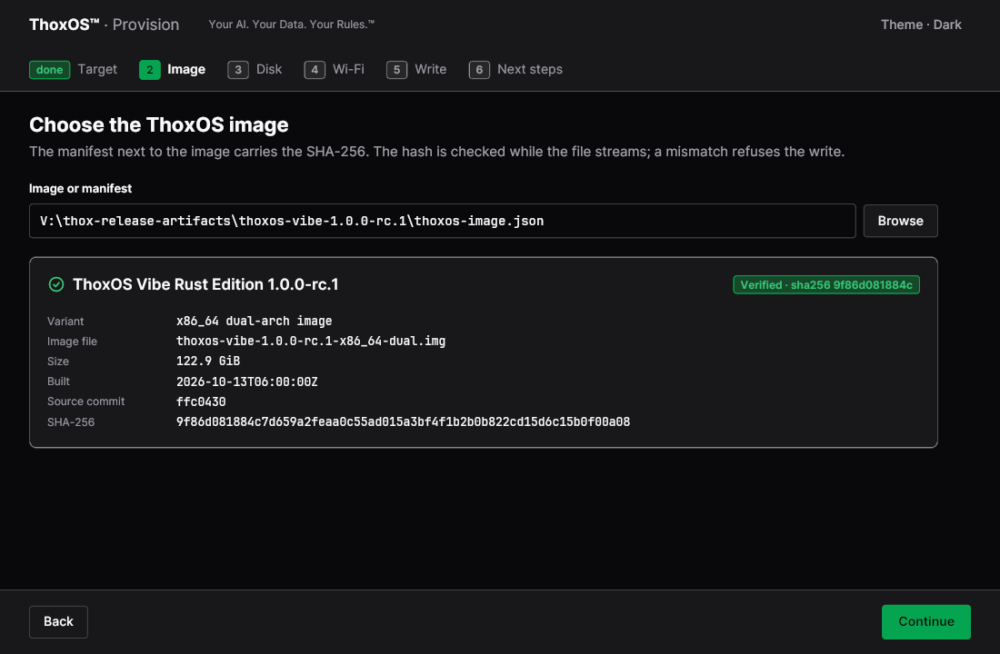
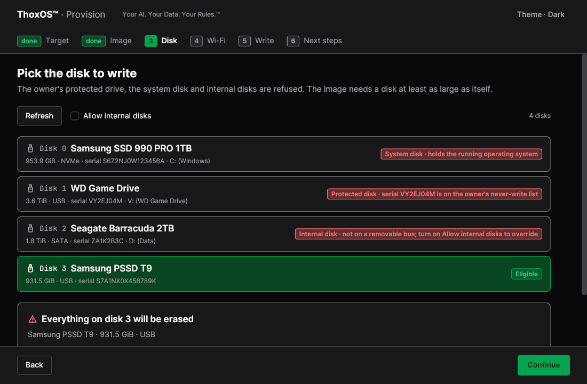
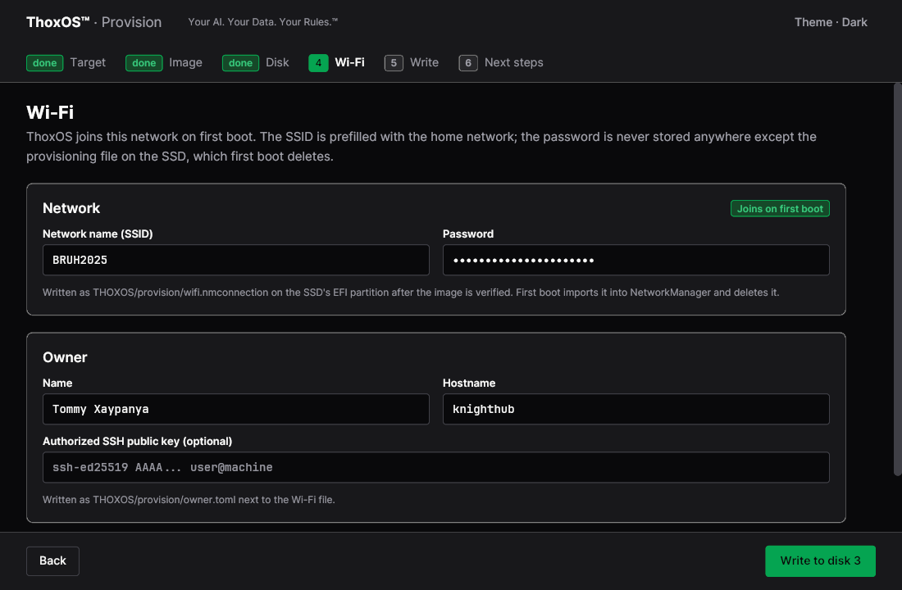
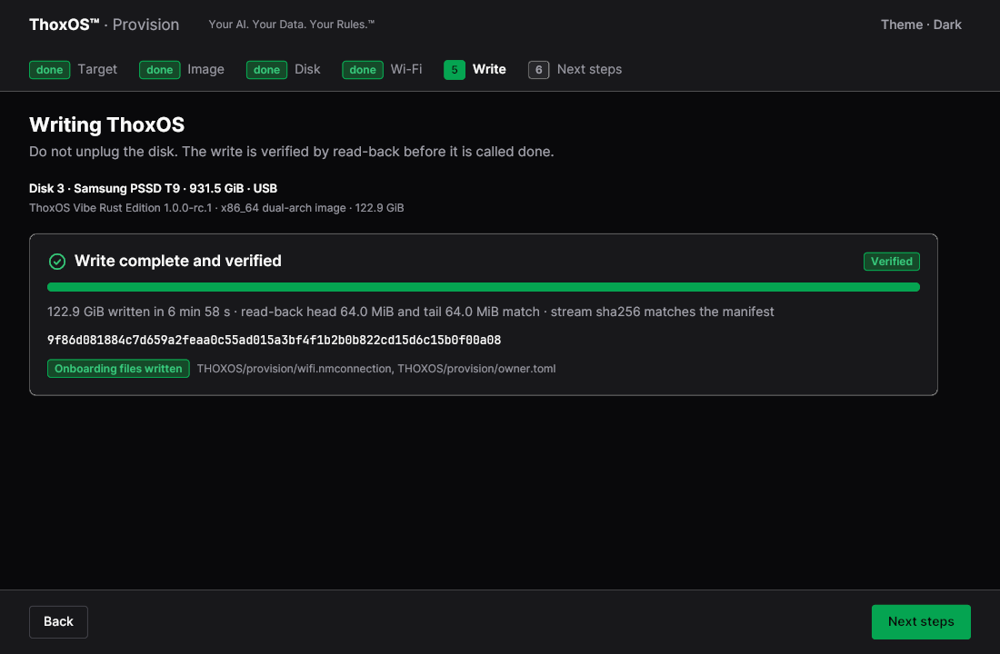
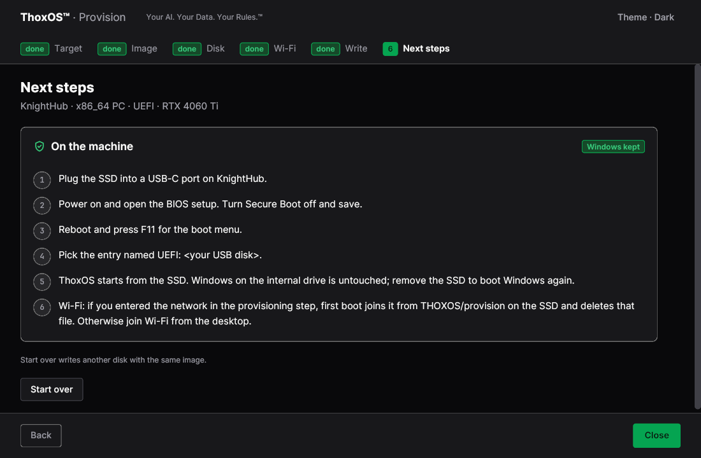
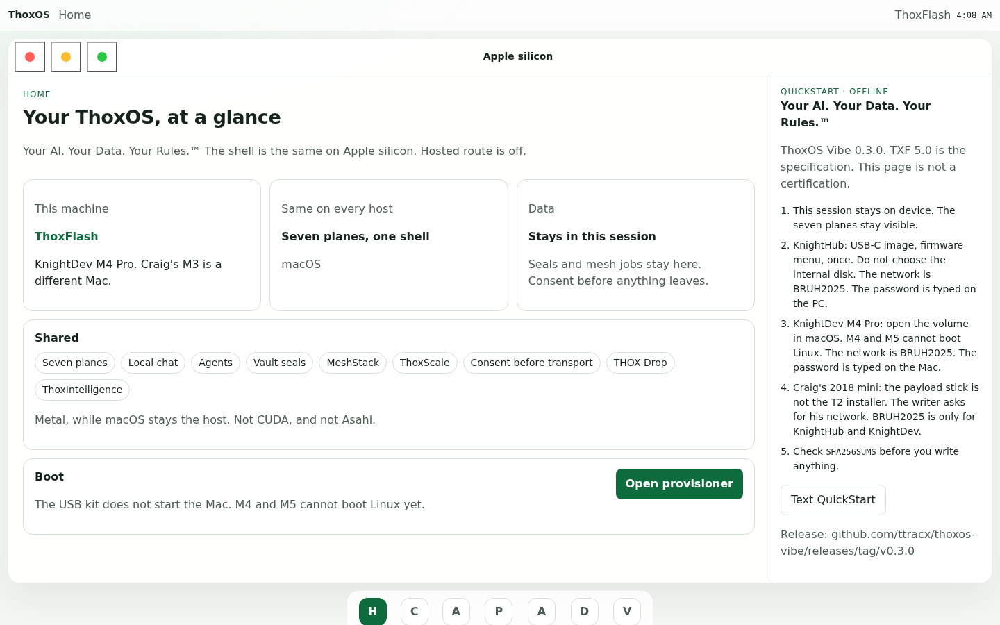

ThoxOS Open — Walkthrough A: Download and install
Download the ThoxOS release, check it, and write it to a removable SSD with the ThoxOS Provision app. Provision prepares the SSD your machine will boot from; nothing is written to any disk until step 5. Bare metal (64-bit x86 PC): boot from the SSD, or follow the install guide for a permanent dual-boot that keeps every Windows partition untouched. Intel Mac (T2): a dedicated installer target that replaces macOS on the internal SSD — the app says so before anything happens. Apple silicon: the M3 line can dual-boot with macOS kept; M4/M5 machines run the host edition under macOS today, and the app refuses what it cannot boot rather than failing halfway. Every screen except A-07 is a REAL capture of the running Provision app; step numbers match the app's own step rail.

REAL — Provision app, step 1 of 6 1 2 3Step 1 — Pick the machine this SSD is for
- The step rail. Six steps, in order. Nothing is written in this step.
- The dual-boot target. ThoxOS boots from the SSD; Windows on the internal drive stays untouched.
- The honest dead end. This MacBook generation cannot boot the image yet, so the app will not write one for it.
Plain English: you are telling the app which computer the SSD is for, because each kind of machine needs its own flavour of the system. If your machine cannot run it, the app stops you now.

REAL — Provision app, step 2 of 6 1 2 3Step 2 — Choose the image, and let it check itself
- Point the app at the release's image file or its manifest — the small text file that travels with every download.
- The green "Verified" tick. The manifest carries the image's SHA-256 fingerprint; the app checks it while the file streams, and a mismatch refuses the write.
- What you picked, in plain sight: variant, file name, size, build time. Check the variant matches step 1's target.
Plain English: before anything is copied, the app proves the download is complete and untampered-with. Never write an image whose fingerprint does not match.

REAL — Provision app, step 3 of 6 1 2 3 4Step 3 — Pick the disk to write
- Refused, in red: the system disk. The app will not overwrite the system it is running on.
- Refused, in red: a protected disk. The owner's never-write list is honoured without asking.
- The one green row: an eligible removable SSD, big enough for the image. The only kind of row you can pick.
- The warning, before you commit: everything on the chosen disk will be erased. Read the name and size twice.
Plain English: the app guards the dangerous choice. Your computer's own drive and any drive marked "never touch" cannot be selected at all.

REAL — Provision app, step 4 of 6 1 2 3Step 4 — Wi-Fi and owner details, written once
- Your home network name and password. ThoxOS joins this network on first boot.
- Your name and the machine's hostname, plus an optional SSH key.
- The button says exactly what happens next: "Write to disk 3" — the disk from step 3.
Plain English: these details go into a small provisioning file on the SSD. First boot imports it and deletes it; the Wi-Fi password is stored nowhere else.

REAL — Provision app, step 5 of 6 1 2 3Step 5 — The write, verified by reading it back
- "Verified." The write is not called done until it has been read back and compared.
- How it was checked: head and tail read back and matched; the stream SHA-256 matches the step 2 manifest.
- The onboarding files from step 4 were written too, named on screen.
Plain English: the app writes the system, then reads the disk back to prove the copy is perfect. Do not unplug the disk during this step.

REAL — Provision app, step 6 of 6 1 2 3Step 6 — Next steps: booting the machine
- The boot, in the app's own words: plug in, power on, firmware boot menu (F11 here), pick "UEFI: <your USB disk>".
- "Windows kept." Remove the SSD and Windows boots exactly as before.
- First boot joins the step 4 Wi-Fi and deletes the file that carried the password.
Plain English: this screen is your checklist at the machine itself. What the boot really looks like is Walkthrough B — the same image, booted and captured.

SIMULATION — TXF web preview page, not the running system 1 2 3The Apple silicon path, on one page
- On Apple silicon the runtime is ThoxFlash, served on the Mac itself while macOS is the host.
- The provisioner opens from this page; the USB kit does not start the Mac, and the page says why: M4 and M5 cannot boot Linux yet.
- The offline QuickStart notes travel with the page, so the instructions work with no network.
Plain English: if your Mac is Apple silicon, start here. The newest machines run ThoxOS as a host edition today; the M3 line can also dual-boot from step 1. The app tells you plainly which case you are in.